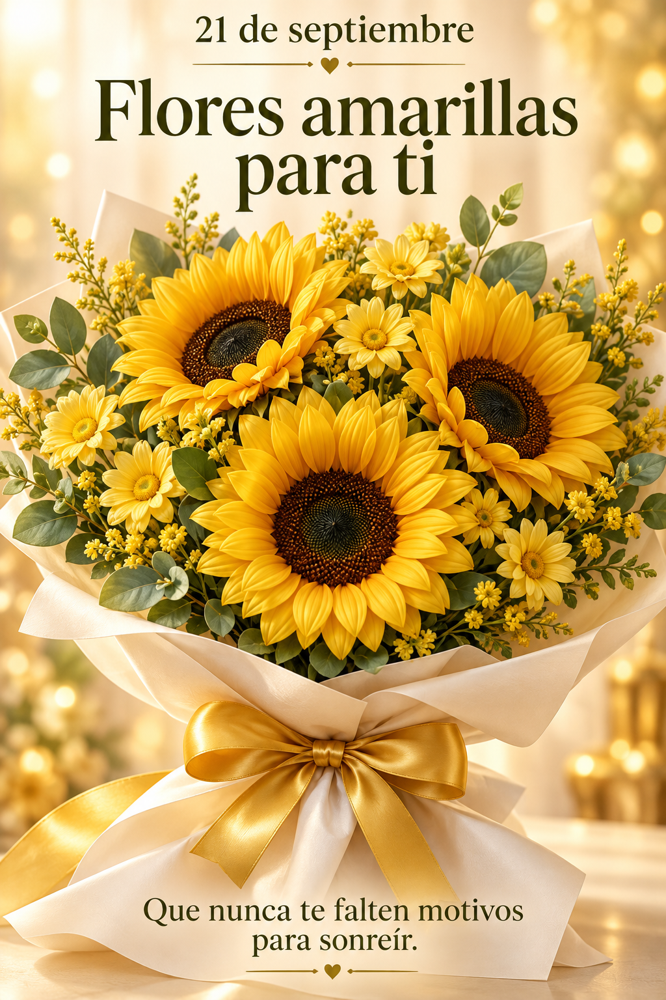

PORQUE MERECES COSAS BONITAS
Emily, mi vida.
Estas flores son para ti.

Hay flores que dicen lo que las palabras no pueden.
LA DISTANCIA NO CAMBIA LO QUE SIENTO
Te amo muchísimo. Nunca lo olvides.
·
PORQUE MERECES COSAS BONITAS

Hay flores que dicen lo que las palabras no pueden.
LA DISTANCIA NO CAMBIA LO QUE SIENTO
Te amo muchísimo. Nunca lo olvides.